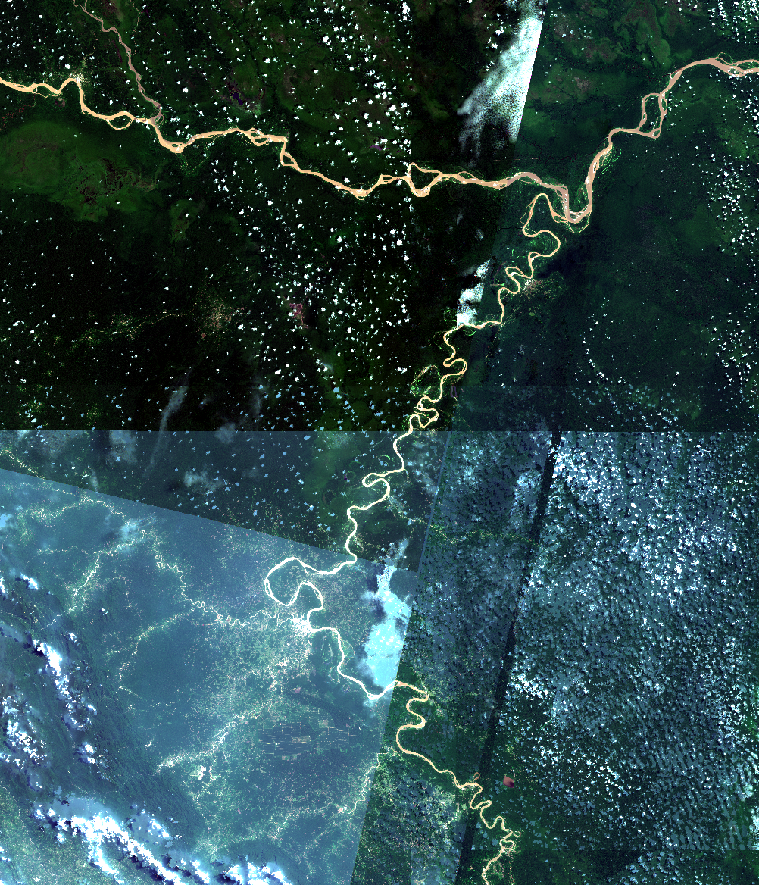
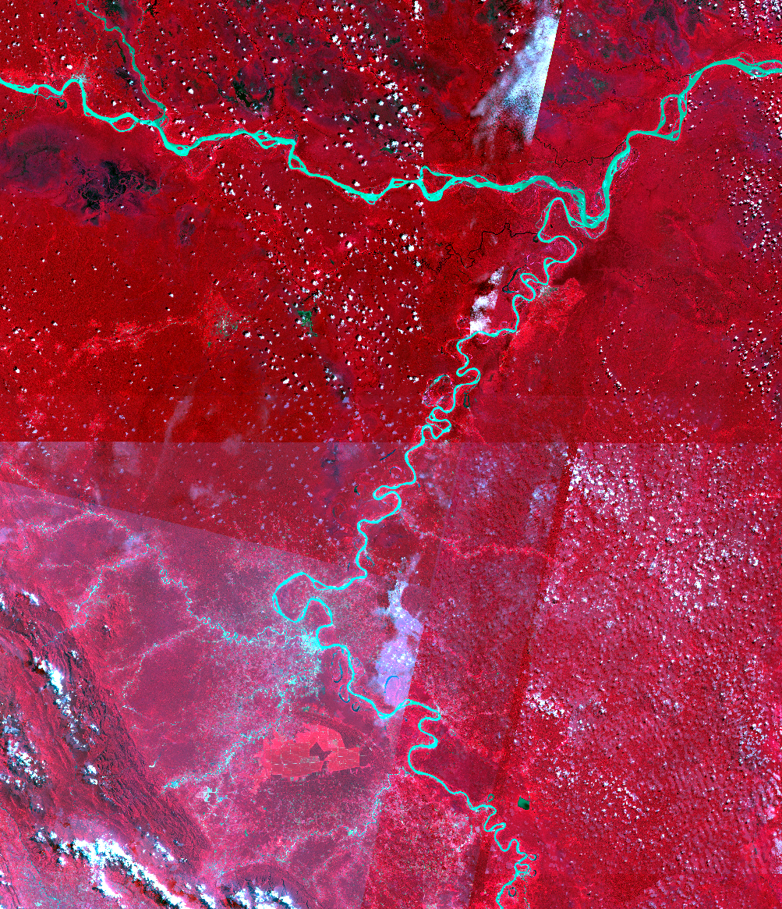

Vegetation Indices Analysis
Monitoring Land Cover Changes
Though the Amazonian Rainforest is experiencing tree cover gain in some places, it is also losing tree cover in others. Using Google Earth Engine and vegetation indices, I will map vegetation health in the region of the Huallaga river in Peru in both 2018 and 2025. With this, the change in vegetation health is visualized.


Project Overview
This assignment uses cloudless orthomosaics to generate True colour and False colour composites in QGIS. This is done for the year 2017 and 2025. For both years the NDVI is computed in QGIS, after which the difference between the two years can be visualized. This will indicate the change in vegetation health near the Huallage river of Peru.
Methods
Cloudless orthomosaics are exported from Google Earth Engine, by selecting a region of interest and running the JavaScript. For both 2017 and 2025 a time period from the first of january till the 31st of december exported to my Google Drive. The orthomosaics were then imported to QGIS, and converted to True colour and False colour composites. The true colour composite was created by setting the RGB bands to 4, 3, 2. The false colour composites were created by setting the RGB bands to 8, 4, 3. The NDVI was calculated using the Raster Calculator and insering the formula decribed below. The symbology was adjusted to clearly visualize the index values. Finally, the change in NDVI over time was computed with the Raster Calculator by subtracting the NDVI of 2025 from the NDVI of 2017. Thus, a positive value indicates a decreate in vegetation health.
Theoretical background
Orthomosaics
An orthomosaic is created by a camera that takes many individual overlapping photos and stitches them together. The photos can be taken from a drone or aerial camera.
Due to this aerial perspective, the photos contain a number of distortions, for example due to tall trees or rocks that are ‘pushed over’ if they are further away from
the center of the image. These distortions are removed to create the final complete and continuous image representation of map of a proportion of the earth.
Cloudless composite Orthomosaics can be created by open data when there are enough recordings of the same region. First, you gather multiple high-resolution images of the
same area from open data (such as Sentinel-2). Then, you use a tool such as QGIS to filter or mask out the clouds in the images and adjust colors for consistency. Finally,
the clearest parts of all the images are combined into one seamless, colorful map.
Multispectral Satellite Imagery
Multispectral imagery is a type of earth observation data collected by satellites that capture images of an area at several distinct wavelength ranges (spectral bands) of the
electromagnetic spectrum. This includes wavelengths that are not visible to the human eye. A normal photo uses 3 bands: red, green, and blue (RGB). Multispectral imagery goes
further by recording multiple bands, which also includes near-infrared (NIR), shortwave infrared (SWIR). Recording more bands beside the RGB bands is valuable, as each band
captures how surfaces reflect light at that specific wavelength. For example, healthy vegetation reflects strongly in the near-infrared band, which is the basis for the NDVI.
Water absorbs most infrared light, making it appear dark in NIR and SWIR bands. SWIR bands are useful in distinguishing soil types and mineral composition. Also, material in urban areas,
such as concrete, asphalt and rooftops have distinct spectral signatures allowing for land use classification.
Multispectral satellite imagery is relevant to sustainable debelopment because it provides detailed and scalable information about Earth’s systems. As mentioned earlier, the multispectral
sensors are able to capture continuous global data on environmental conditions beyond the human vision, making the monitoring of plant heath, soil moisture or deforestation more accurate.
Besides this, multispectral satellite imagery has wide applicability over many sustainable development goals. Besides environmental aspects, it can contribute to the optimization of irrigation use
(SDG 2, zero hunger), the detection of heat islands in cities (SDG 11, sustainable cities). All in all, this method of satellite imagery is a cost-effective too in evidence based policy and planning,
which will contribute to the progress towards the UN sustainable development goals.
Sentinel-2
An example of a multispectral imagery satellite is Sentinel-2. It’s one main payload is a Multi-Spectral Instrument (MSI). This is a passive system, as it uses an optical sensor that detects natural
sunlight reflected from the Earth’s surface. As it relies on external energy (the sun), it only works during the day. The MSI measures 13 spectral bands (visible, near-infrared, shortwave infrared) with
resolutions between 10-60 meters. Sentinel-2 is run by the European Space Agency (ESA) and is a part of a larger Earth Observation Initiative (the Copernicus Programme).
Vegetation Index
A vegetation index is a numerical value calculated from satellite data to indicate the presence, health or density of vegetation. Healthy plants reflect more near-infrared light and absorb more red light
(used in photosynthesis). Thus, the measurements from the satellite spectral bands can be used to analyze and monitor vegetation remotely. Examples include the monitoring of crop health and growth, as the
satellites can detect stress, disease of nutrient deficiencies. It can also be used in detecting droughts, deforestation and land use. Importantly, these measurements can be taken over long periods of time,
thus allowing for the detection of change.
The Normalized Difference Vegetation Index (NDVI) is the most used vegetation index for the greenness and health of plants. NDVI images are captured through satellite or drone sensors, of which the RED and
NIR bands are used in the formula depicted in figure 2. NIR stands for the Near Infra Red band and RED stands for the red band of the satellite or drone. This equation works due to the absorption and reflection
of RED and NIR by vegetation, as mentioned earlier. The equation outputs a value for the index of a specific area, between -1 and +1.
The time of year matters when recording a orthomosaic, as vegetation changes with the seasons. The satellite data is able to capture these changes, which affect how the vegetations appears no the NDVI images and classification.
During the summer, vegetation is often green and dense, while during winters its bare and reveals sub-tree structures. Moreover, the position of the sun changes throughout the seasons, which affects how light is reflected and
thus may alter measurements. In order to correctly identify change, the orthomosaics must be taken from the same time period, or else the change could occur due to seasonal variation.
Results & Findings
The resulting map reveals clear regional inequalities in access to playground swings in The Hague, with higher accessibility in developed areas and lower accessibility in parts of the city.
Reflection
This project strengthened my understanding of spatial data visualization and cartographic design. A limitation was the availability and resolution of local datasets. Future improvements could include more detailed area-specific analysis.
Project Details
- Course: GIS and Cartography
- Instructor: Britta Ricker
- Date: 17 June 2026
- Study Area: The Hague
Software & Tools
- QGIS
- ArcGIS Pro
- Google Earth Engine
- Python